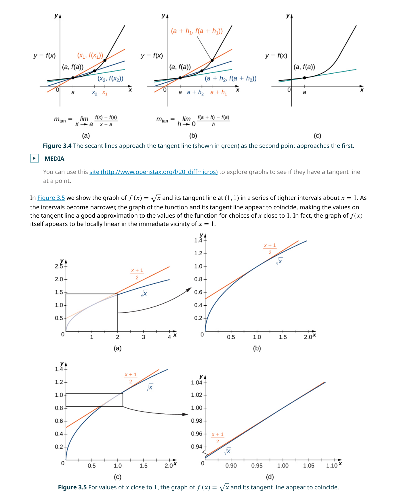
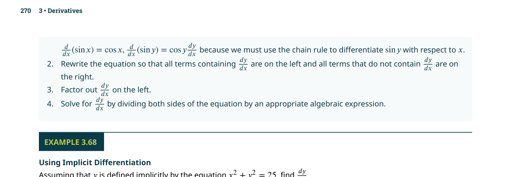

導數
📌 核心問題
如何精確描述一個函數在某一點的瞬時變化率？第 2 章的極限為這個問題提供了數學語言——導數（derivative）就是把「變化率」用極限嚴格定義的產物。本章從切線問題出發，建立完整的微分法則體系。
🔑 關鍵概念
- 導數定義：$f'(a) = \lim_{h \to 0} \frac{f(a+h)-f(a)}{h}$
- 切線斜率：導數的幾何意義——曲線在該點的切線斜率
- 可微 ⇒ 連續：反過來不成立（$|x|$ 在 $x=0$）
- 冪法則：$\frac{d}{dx}x^n = nx^{n-1}$
- 積法則 vs 連鎖律：乘法用積法則，合成用連鎖律——搞混是致命錯誤
- 連鎖律：$\frac{d}{dx}f(g(x)) = f'(g(x)) \cdot g'(x)$——「外導 × 內導」
- 隱函數微分：方程兩邊同時對 $x$ 微分，遇到 $y$ 就乘上 $y'$
- $\frac{d}{dx}e^x = e^x$：自然指數函數的導數就是它自己
- $\frac{d}{dx}\ln x = \frac{1}{x}$：自然對數的導數
3.1 導數的定義（Defining the Derivative）
導數的概念源自兩個幾何問題的交匯
回顧第 2 章：給定函數 $f$，通過 $(a, f(a))$ 和 $(x, f(x))$ 的割線（secant line）斜率是 $\frac{f(x)-f(a)}{x-a}$。當 $x$ 趨近於 $a$ 時，割線趨近於切線，因此：
這個極限如果存在，我們說 $f$ 在 $x=a$ 處可微（differentiable）。$f'(a)$ 這個數值就是 $f$ 在 $x=a$ 處的瞬時變化率，也是切線的斜率。導數的記號有多種：$f'(a)$（Lagrange）、$\frac{dy}{dx}\big|_{x=a}$（Leibniz）、$\dot{y}$（Newton——物理常用）。
如果你用顯微鏡不斷放大曲線上的一點，你會發現曲線看起來越來越像一條直線。那條直線就是切線，它的斜率就是導數。這是微積分最深刻的直覺之一：可微函數在微觀尺度上是線性的。
📝 範例
📝 範例：用定義求導數求 $f(x)=x^2$ 在 $x=3$ 處的導數。
解：$$f'(3) = \lim_{h \to 0} \frac{(3+h)^2 - 3^2}{h} = \lim_{h \to 0} \frac{9+6h+h^2-9}{h} = \lim_{h \to 0} \frac{6h+h^2}{h} = \lim_{h \to 0} (6+h) = 6$$
所以 $f'(3)=6$，這表示在 $x=3$ 處，$y=x^2$ 的曲線以斜率 6 上升。
導數不存在的完整分類
函數在一點處不可微的可能原因（附圖示）：
- 角點（Corner）：左右導數存在但不相等——如 $f(x)=|x|$ 在 $x=0$
- 尖點（Cusp）：切線斜率趨於 $\pm\infty$——如 $f(x)=x^{2/3}$ 在 $x=0$
- 不連續點：函數本身不連續——如階梯函數的跳躍點
- 垂直切線：斜率趨於無窮大——如 $f(x)=\sqrt[3]{x}$ 在 $x=0$
記住：可微性是比連續性更強的條件。一個函數可以處處連續但處處不可微——歷史上 Weierstrass 函數就是著名的反例。
如果 $f'(a) > 0$，函數在 $a$ 處遞增（切線向右上方傾斜）。如果 $f'(a) < 0$，函數在 $a$ 處遞減。如果 $f'(a) = 0$，函數在 $a$ 處有水平切線——這通常是局部極值點（local extremum）的候選位置（第 4 章會詳細討論）。
以下四種情況導數不存在：(1) 函數中有尖點（corner）——如 $f(x)=|x|$ 在 $x=0$；(2) 不連續點——不連續就不可微；(3) 垂直切線——斜率趨於無窮大，如 $f(x)=\sqrt[3]{x}$ 在 $x=0$；(4) 震盪——如 $f(x)=x\sin(1/x)$ 在 $x=0$ 附近劇烈震盪。
3.2 導數作為函數（The Derivative as a Function）
上一節我們計算了 $f$ 在
$f'$ 是一個從函數產生另一個函數的運算。給定 $f(x)=x^2$，它的導函數是 $f'(x)=2x$——一個全新的函數，在每個點 $x$ 處給出原函數在該點的斜率。
$f'(x)$ 的圖形告訴我們 $f(x)$ 的斜率如何隨 $x$ 變化。例如 $f'(x)=2x$ 的圖形是一條通過原點的直線——這表示 $f(x)=x^2$ 的斜率從負值（$x<0$ 時曲線下降）經過零（原點處是谷底）變成正值（$x>0$ 時曲線上升）。
🎮 互動模型：f(x) 與 f'(x) 聯動探索
拖動 x 滑桿，觀察上方 f(x) 的切線斜率如何對應下方 f'(x) 的值。點擊「自動移動」觀看動態對應。
可微性與連續性
定理：若 $f$ 在 $a$ 處可微，則 $f$ 在 $a$ 處連續。證明很簡單：$\lim_{x \to a}[f(x)-f(a)] = \lim_{x \to a}\frac{f(x)-f(a)}{x-a} \cdot (x-a) = f'(a) \cdot 0 = 0$。
但反過來不成立：連續不一定可微。最經典的反例是 $f(x)=|x|$，在 $x=0$ 處連續（$\lim_{x \to 0}|x| = 0 = |0|$），但不可微（左右導數分別為 $-1$ 和 $+1$，不相等）。
其他記號
除了 $f'(x)$（Lagrange 記號）和 $\frac{dy}{dx}$（Leibniz 記號），還有 Newton 記號 $\dot{y}$（物理學常用，表示對時間的導數）和 Euler 記號 $D_x f$（強調微分是一個運算子）。Leibniz 記號的最大優點是明確顯示了「對哪個變數微分」——這在連鎖律和隱函數微分中特別有用。
高階導數
導函數 $f'$ 本身也是一個函數，可以對它再微分，得到二階導數 $f''(x) = \frac{d^2y}{dx^2}$。繼續微分得到三階 $f'''(x)$、四階 $f^{(4)}(x)$ 等。二階導數在物理中代表加速度（速度的變化率），在幾何中描述曲線的凹性（concavity）——這將是第 4 章的核心主題。
📝 範例
📝 範例：求導函數求 $f(x) = \sqrt{x}$ 的導函數 $f'(x)$。
解：$$f'(x) = \lim_{h \to 0} \frac{\sqrt{x+h} - \sqrt{x}}{h}$$分子有理化：$= \lim_{h \to 0} \frac{(x+h)-x}{h(\sqrt{x+h}+\sqrt{x})} = \lim_{h \to 0} \frac{1}{\sqrt{x+h}+\sqrt{x}} = \frac{1}{2\sqrt{x}}$（$x>0$）。
注意定義域：$f(x)=\sqrt{x}$ 定義在 $[0,\infty)$，但 $f'(x)=\frac{1}{2\sqrt{x}}$ 只定義在 $(0,\infty)$——在 $x=0$ 處切線是垂直的（斜率無窮大），導數不存在。

3.3 微分法則（Differentiation Rules）
用極限定義每次計算導數太慢了。
常數法則：$\frac{d}{dx}[c] = 0$
冪法則：$\frac{d}{dx}[x^n] = nx^{n-1}$（對任何實數 $n$）
常數倍法則：$\frac{d}{dx}[cf(x)] = c f'(x)$
和差法則：$\frac{d}{dx}[f(x) \pm g(x)] = f'(x) \pm g'(x)$
積法則（Product Rule）
$\frac{d}{dx}[f(x)g(x)] \neq f'(x)g'(x)$。積法則不能像和的法則那樣「各別微分再相乘」。這可能是整個微積分中最常出現的錯誤——每次看到兩個函數相乘，一定要使用積法則。
商法則（Quotient Rule）
📝 範例
📝 範例：使用積法則求 $\frac{d}{dx}[(x^2+1)(x^3-3x)]$。
解：令 $f(x)=x^2+1$, $g(x)=x^3-3x$。
$f'(x)=2x$, $g'(x)=3x^2-3$。
$\frac{d}{dx}[f(x)g(x)] = (2x)(x^3-3x) + (x^2+1)(3x^2-3)$
$= 2x^4-6x^2 + 3x^4-3x^2+3x^2-3 = 5x^4-6x^2-3$。
（驗算：直接展開 $f(x)g(x)=x^5-3x^3+x^3-3x=x^5-2x^3-3x$，微分得 $5x^4-6x^2-3$ ✓）
延伸：微分法則的推導
積法則可以從導數定義推導：令 $P(x)=f(x)g(x)$，則 $P'(x) = \lim_{h\to 0}\frac{f(x+h)g(x+h)-f(x)g(x)}{h}$。加入並減去 $f(x)g(x+h)$：$= \lim_{h\to 0}\left[g(x+h)\frac{f(x+h)-f(x)}{h} + f(x)\frac{g(x+h)-g(x)}{h}\right]$。由於可微函數連續，$\lim_{h\to 0}g(x+h)=g(x)$，因此 $P'(x)=g(x)f'(x)+f(x)g'(x)$。
3.4 導數作為變化率（Derivatives as Rates of Change）
除了幾何意義（切線斜率），導數有一個
在經濟學中，$C(x)$ 是生產 $x$ 件商品的總成本，$C'(x)$ 就是邊際成本（marginal cost）——多生產一件約需增加的成本。同樣地，人口函數 $P(t)$ 的導數就是人口增長率。
變化率的具體應用
導數作為變化率在以下領域有直接應用：
- 物理：$s(t)$ 位置 → $v(t)=s'(t)$ 速度 → $a(t)=v'(t)=s''(t)$ 加速度
- 化學：$[A](t)$ 反應物濃度 → $[A]'(t)$ 反應速率
- 生物：$P(t)$ 種群數量 → $P'(t)$ 種群增長率
- 經濟：$R(x)$ 收益函數 → $R'(x)$ 邊際收益（多賣一件多賺多少）
📝 範例
📝 範例：物理應用一顆球從高塔自由落下，位置函數為 $s(t) = 4.9t^2$（公尺，$t$ 為秒）。求 $t=3$ 秒時的速度。
解：$v(t) = s'(t) = 9.8t$。$v(3) = 9.8 \times 3 = 29.4$ 公尺/秒。加速度 $a(t) = v'(t) = 9.8$ 公尺/秒²（等於重力加速度）。
無論是物理、經濟、生物還是工程，只要有一個量隨另一個量變化，它的導數就描述「變化有多快」。導數把不同領域的問題統一在同一種數學語言之下——這是微積分最強大的抽象能力。
3.5 三角函數的導數（Derivatives of Trigonometric Functions）
三角函數的導數需要用極限定義配合重要的三角極限來推導。兩個最關鍵的極限是：
利用這兩個極限和三角恆等式 $\sin(\theta+h) = \sin\theta\cos h + \cos\theta\sin h$，可以推導出：
$\frac{d}{dx}[\sin x] = \cos x$
$\frac{d}{dx}[\cos x] = -\sin x$
$\frac{d}{dx}[\tan x] = \sec^2 x$
$\frac{d}{dx}[\csc x] = -\csc x \cot x$
$\frac{d}{dx}[\sec x] = \sec x \tan x$
$\frac{d}{dx}[\cot x] = -\csc^2 x$
$\sin x \xrightarrow{d/dx} \cos x \xrightarrow{d/dx} -\sin x \xrightarrow{d/dx} -\cos x \xrightarrow{d/dx} \sin x$。微分四次完成一個循環——這個性質使三角函數成為微分方程中的自然基底。
推導 $\frac{d}{dx}\sin x = \cos x$
使用極限定義：$\frac{d}{dx}\sin x = \lim_{h \to 0} \frac{\sin(x+h)-\sin x}{h}$。利用三角恆等式 $\sin(x+h) = \sin x\cos h + \cos x\sin h$：
代入兩個關鍵極限 $\lim_{h \to 0}\frac{\sin h}{h}=1$ 和 $\lim_{h \to 0}\frac{\cos h - 1}{h}=0$：
$\cos x$ 的導數可以用類似方法推導，或用 $\cos x = \sin(x + \pi/2)$ 配合連鎖律。這兩個推導是微積分中最經典的極限應用之一。
3.6 連鎖律（The Chain Rule）
連鎖律是微分法則中最強大也最容易出錯
用 Leibniz 記號更直覺：若 $y = f(u)$ 且 $u = g(x)$，則 $\frac{dy}{dx} = \frac{dy}{du} \cdot \frac{du}{dx}$。彷彿 $du$ 可以「約掉」——雖然這不是嚴格的數學推理，但提供了極強的記憶輔助。
📝 範例
📝 範例：連鎖律求 $\frac{d}{dx}[\sin(x^2)]$。
解：外層 $f(u)=\sin u$，內層 $u=g(x)=x^2$。
$f'(u)=\cos u$，$g'(x)=2x$。
$\frac{d}{dx}[\sin(x^2)] = \cos(x^2) \cdot 2x = 2x\cos(x^2)$。
$\sin(x^2)$ 是 $\sin$ 作用在 $x^2$ 上 → 這是合成 → 用連鎖律。
$x^2\sin x$ 是 $x^2$ 乘以 $\sin x$ → 這是乘積 → 用積法則。
判斷方法：問自己「最外層的運算是什麼？」如果是函數作用（$\sin(\cdots)$、$e^{(\cdots)}$、$(\cdots)^n$），用連鎖律；如果是乘法，用積法則。
廣義冪法則
連鎖律與冪法則結合得到廣義冪法則：$\frac{d}{dx}[(g(x))^n] = n(g(x))^{n-1} \cdot g'(x)$。這個公式可能是整個微積分中使用頻率最高的公式。
📝 範例
📝 範例：廣義冪法則求 $\frac{d}{dx}[(x^3+2x)^{10}]$。
解：$f(u)=u^{10}$，$u=g(x)=x^3+2x$。$f'(u)=10u^9$，$g'(x)=3x^2+2$。答案：$10(x^3+2x)^9(3x^2+2)$。這就是廣義冪法則的典型應用——外層冪函數，內層多項式。
對於三層以上的合成（如 $\sin(e^{x^2})$），連鎖律可以重複應用：$\frac{d}{dx}\sin(e^{x^2}) = \cos(e^{x^2}) \cdot e^{x^2} \cdot 2x$。原則是「從外到內，逐層微分，全部相乘」。
3.7 反函數的導數（Derivatives of Inverse Functions）
如果 $f$ 和 $g$ 互為反函數（即 $g(f(x)) = x$），對兩邊微分得到：
應用這個公式可以求出反三角函數的導數：
$\frac{d}{dx}[\arcsin x] = \frac{1}{\sqrt{1-x^2}}$
$\frac{d}{dx}[\arccos x] = -\frac{1}{\sqrt{1-x^2}}$
$\frac{d}{dx}[\arctan x] = \frac{1}{1+x^2}$
推導 $\frac{d}{dx}\arcsin x$
令 $y = \arcsin x$，則 $\sin y = x$（$y \in [-\pi/2, \pi/2]$）。對兩邊隱函數微分：$\cos y \cdot y' = 1$ → $y' = \frac{1}{\cos y}$。需要把 $\cos y$ 用 $x$ 表示：由於 $\sin^2 y + \cos^2 y = 1$ 且 $\sin y = x$，所以 $\cos y = \sqrt{1-x^2}$（在 $y \in [-\pi/2, \pi/2]$ 時 $\cos y \geq 0$）。因此 $\frac{d}{dx}\arcsin x = \frac{1}{\sqrt{1-x^2}}$。
📝 範例
📝 範例：反三角函數導數求 $\frac{d}{dx}[\arcsin(x^2)]$。
解：使用連鎖律：外層導數 $\frac{1}{\sqrt{1-u^2}}$（$u=x^2$），內層導數 $2x$。答案：$\frac{2x}{\sqrt{1-x^4}}$。
3.8 隱函數微分（Implicit Differentiation）
很多方程式不能（或不方便）解成 $y = f(x)$ 的形式
📝 範例
📝 範例：隱函數微分
求 $x^2 + y^2 = 25$ 中 $\frac{dy}{dx}$ 的表達式。
解：對兩邊微分：$\frac{d}{dx}[x^2] + \frac{d}{dx}[y^2] = \frac{d}{dx}[25]$。
$2x + 2y \cdot y' = 0$（注意 $y^2$ 微分時用了連鎖律：$\frac{d}{dx}[y^2] = 2y \cdot y'$）
因此 $y' = -\frac{x}{y}$。這告訴我們圓上任一點的切線斜率。
隱函數微分不僅用於幾何（求曲線切線），在相關變率問題（4.1 節）和反函數導數推導中也扮演關鍵角色。它是連鎖律最自然的延伸。
進階範例
📝 範例
📝 範例：笛卡兒葉形線求方程式 $x^3 + y^3 = 6xy$ 上點 $(3,3)$ 處的切線斜率。
解：對兩邊隱函數微分：$3x^2 + 3y^2 \cdot y' = 6y + 6x \cdot y'$（右邊用了積法則）。整理含 $y'$ 的項：$3y^2 y' - 6x y' = 6y - 3x^2$ → $y'(3y^2 - 6x) = 6y - 3x^2$ → $y' = \frac{6y-3x^2}{3y^2-6x}$。代入 $(3,3)$：$y' = \frac{18-27}{27-18} = \frac{-9}{9} = -1$。
微分 $\frac{d}{dx}[y^3]$ 時，把它當成 $(y(x))^3$——外層是 $u^3$，微分得 $3u^2$；內層是 $y(x)$，微分得 $y'$。所以 $\frac{d}{dx}[y^3] = 3y^2 \cdot y'$。每次微分含有 $y$ 的項時，永遠要補上 $y'$。忘記這一步是隱函數微分最常見的錯誤。

3.9 指數與對數函數的導數（Derivatives of Exponential and Logarithmic Functions）
這是微積分中最優雅的結果之一。利用
$\frac{d}{dx}[e^x] = e^x$
$\frac{d}{dx}[a^x] = a^x \ln a$（對任意 $a>0$）
$\frac{d}{dx}[\ln x] = \frac{1}{x}$（$x>0$）
$\frac{d}{dx}[\log_a x] = \frac{1}{x \ln a}$
對數微分法（Logarithmic Differentiation）
對於形如 $y = [f(x)]^{g(x)}$ 的函數（底和指數都是 $x$ 的函數），或者包含大量乘積、冪次的複雜函數，先取 $\ln$ 再微分往往能大幅簡化計算：
步驟：(1) 對兩邊取 $\ln$：$\ln y = \ln[f(x)]$；(2) 利用對數性質展開右邊；(3) 對兩邊隱函數微分：$\frac{y'}{y} = \cdots$；(4) 解出 $y' = y \cdot (\cdots)$。
📝 範例
📝 範例：對數微分法求 $\frac{d}{dx}[x^x]$。
解：令 $y = x^x$。取 $\ln$：$\ln y = x \ln x$。微分：$\frac{y'}{y} = \ln x + x \cdot \frac{1}{x} = \ln x + 1$。因此 $y' = x^x(\ln x + 1)$。
📋 關鍵概念回顧（Key Concepts）
- 導數的定義：\(f'(x)=\lim_{h\to 0}\frac{f(x+h)-f(x)}{h}\)，表示函數在 x 處的瞬時變化率，也是切線斜率。
- 導數的幾何意義：\(f'(a)\) 是曲線 \(y=f(x)\) 在點 \((a,f(a))\) 處切線的斜率。
- 可微性與連續性：可微 ⇒ 連續，但連續不一定可微（如尖點、轉折點、鉛直切線處）。
- 導數記號：\(f'(x)\)、\(\frac{dy}{dx}\)、\(\frac{d}{dx}f(x)\)、\(y'\)、\(D_x f\)，皆表示對 x 的導數。
- 冪法則：\(\frac{d}{dx}x^n=nx^{n-1}\)，適用於任意實數指數 n。
- 和差法則與常數倍法則：導數是線性運算，\((f\pm g)'=f'\pm g'\)，\((cf)'=cf'\)。
- 積法則：\((fg)'=f'g+fg'\)，不可簡單地將導數相乘。
- 商法則：\(\left(\frac{f}{g} ight)'=\frac{f'g-fg'}{g^2}\)。
- 連鎖律：\(\frac{d}{dx}f(g(x))=f'(g(x))\cdot g'(x)\)，是處理合成函數微分的核心工具。
- 隱函數微分：對方程兩邊同時對 x 微分，將 y 視為 x 的函數處理，解出 \(\frac{dy}{dx}\)。
- 指數函數的導數：\(\frac{d}{dx}e^x=e^x\)；\(\frac{d}{dx}b^x=b^x\ln b\)。
- 對數函數的導數：\(\frac{d}{dx}\ln x=\frac{1}{x}\)；\(\frac{d}{dx}\log_b x=\frac{1}{x\ln b}\)。
- 三角函數的導數：\(\frac{d}{dx}\sin x=\cos x\)、\(\frac{d}{dx}\cos x=-\sin x\)、\(\frac{d}{dx}\tan x=\sec^2 x\)。
- 反三角函數的導數：\(\frac{d}{dx}\arcsin x=\frac{1}{\sqrt{1-x^2}}\)、\(\frac{d}{dx}\arctan x=\frac{1}{1+x^2}\)。
- 高階導數：二階導數 \(f''\) 是導數的導數，表示變化率的變化率（加速度）。
- 對數微分：對 \(y=f(x)\) 兩邊取自然對數後再微分，適合處理複雜乘積或指數型函數。
📐 關鍵公式（Key Equations）
| 公式 | 說明 |
|---|---|
| $$f'(x)=\lim_{h\to 0}\frac{f(x+h)-f(x)}{h}$$ | 導數的極限定義 |
| $$f'(a)=\lim_{x\to a}\frac{f(x)-f(a)}{x-a}$$ | 導數的差分商定義（點 a） |
| $$\frac{d}{dx}x^n=nx^{n-1}$$ | 冪法則 |
| $$\frac{d}{dx}[f(x)+g(x)]=f'(x)+g'(x)$$ | 和法則 |
| $$\frac{d}{dx}[cf(x)]=cf'(x)$$ | 常數倍法則 |
| $$\frac{d}{dx}[f(x)g(x)]=f'(x)g(x)+f(x)g'(x)$$ | 積法則 |
| $$\frac{d}{dx}\!\left[\frac{f(x)}{g(x)} ight]=\frac{f'(x)g(x)-f(x)g'(x)}{[g(x)]^2}$$ | 商法則 |
| $$\frac{d}{dx}f(g(x))=f'(g(x))\cdot g'(x)$$ | 連鎖律 |
| $$\frac{d}{dx}e^x=e^x$$ | 自然指數函數的導數 |
| $$\frac{d}{dx}b^x=b^x\ln b$$ | 一般指數函數的導數 |
| $$\frac{d}{dx}\ln x=\frac{1}{x}$$ | 自然對數函數的導數 |
| $$\frac{d}{dx}\log_b x=\frac{1}{x\ln b}$$ | 一般對數函數的導數 |
| $$\frac{d}{dx}\sin x=\cos x$$ | 正弦函數的導數 |
| $$\frac{d}{dx}\cos x=-\sin x$$ | 餘弦函數的導數 |
| $$\frac{d}{dx}\tan x=\sec^2 x$$ | 正切函數的導數 |
| $$\frac{d}{dx}\arcsin x=\frac{1}{\sqrt{1-x^2}}$$ | 反正弦函數的導數 |
| $$\frac{d}{dx}\arctan x=\frac{1}{1+x^2}$$ | 反正切函數的導數 |
| $$\frac{d}{dx}\left(\ln y ight)=\frac{y'}{y}$$ | 對數微分的核心關係 |
本章摘要：微分法則速查表
| 函數 | 導數 | 備註 |
|---|---|---|
| $c$（常數） | $0$ | |
| $x^n$ | $nx^{n-1}$ | 冪法則 |
| $e^x$ | $e^x$ | 導數 = 自己！ |
| $a^x$ | $a^x \ln a$ | |
| $\ln x$ | $1/x$ | $x>0$ |
| $\sin x$ | $\cos x$ | |
| $\cos x$ | $-\sin x$ | 注意負號！ |
| $\tan x$ | $\sec^2 x$ | |
| $\arcsin x$ | $1/\sqrt{1-x^2}$ | |
| $\arctan x$ | $1/(1+x^2)$ | |
| $f(x)g(x)$ | $f'g + fg'$ | 積法則 |
| $f(x)/g(x)$ | $(f'g - fg')/g^2$ | 商法則 |
| $f(g(x))$ | $f'(g(x)) \cdot g'(x)$ | 連鎖律 |
⚠️ 初學者常見錯誤
這可能是全微積分最頻繁的錯誤。兩個函數的乘積的導數不是各自導數的乘積。例如 $\frac{d}{dx}[x \cdot \sin x] \neq 1 \cdot \cos x$。正確答案是 $1 \cdot \sin x + x \cdot \cos x = \sin x + x\cos x$。養成習慣：看到乘法就想到積法則。
微分 $\sin(x^2)$ 時，很多人只記得 $\frac{d}{dx}\sin = \cos$，卻忘記乘上內層導數 $2x$。正確答案是 $\cos(x^2) \cdot 2x$。任何時候看到一個函數包住另一個函數，就要啟動連鎖律。
$e^x$ 的導數是 $e^x$，不是 $xe^{x-1}$。冪法則 $\frac{d}{dx}[x^n] = nx^{n-1}$ 的變數在底數——當變數在指數位置時（如 $e^x$、$2^x$），冪法則完全不適用。這是初學者最常見的混淆。
$\frac{d}{dx}[\frac{f}{g}] = \frac{f'g - fg'}{g^2}$，分子是「(分子的導數 × 分母) − (分子 × 分母的導數)」。很多人寫成 $fg' - f'g$——順序顛倒會導致符號錯誤。口訣：「lo d hi minus hi d lo」可以幫助記憶。
$\frac{d}{dx}[\cos x] = -\sin x$（有負號），不是 $+\sin x$。這個負號在往後的積分中會不斷回來困擾你——最好現在就記牢。
✅ 自我檢測（Self-Check）
完成以下題目檢驗你對本章核心概念的掌握程度。點擊展開查看答案。
題 1：若 $f$ 在 $x=a$ 可導，$f$ 在 $x=a$ 是否必定連續？
答案：是。可導性 ⇒ 連續性（反過來則不成立）。經典反例：$f(x)=|x|$ 在 $x=0$ 連續但不可導（有尖角）。
題 2：判斷對錯：「$\frac{d}{dx}[f(x)g(x)] = f'(x)g'(x)$」
答案：錯。正確的積法則為 $\frac{d}{dx}[f(x)g(x)] = f'(x)g(x) + f(x)g'(x)$。例如 $\frac{d}{dx}[x \cdot \sin x] \neq 1 \cdot \cos x$，正確答案是 $\sin x + x\cos x$。
題 3：使用導數定義計算 $f'(2)$，其中 $f(x)=\frac{1}{x+1}$。
答案：$-\frac{1}{9}$。使用定義 $f'(2)=\lim_{h\to 0}\frac{f(2+h)-f(2)}{h}=\lim_{h\to 0}\frac{\frac{1}{3+h}-\frac{1}{3}}{h}=\lim_{h\to 0}\frac{\frac{3-(3+h)}{3(3+h)}}{h}=\lim_{h\to 0}\frac{-1}{3(3+h)}=-\frac{1}{9}$。
題 4：用隱函數微分求 $\frac{dy}{dx}$，其中 $x^2 + y^2 = 25$。
答案：$\frac{dy}{dx} = -\frac{x}{y}$。對兩邊同時對 $x$ 微分：$2x + 2y\frac{dy}{dx} = 0$，解出 $\frac{dy}{dx} = -\frac{x}{y}$。此結果在圓上任意點（除 $y=0$ 外）給出切線斜率。
題 5：使用連鎖律求 $\frac{d}{dx}\sin(e^{2x})$。
答案：$2e^{2x}\cos(e^{2x})$。外層：$\sin u$ 導數為 $\cos u$，$u=e^{2x}$；內層：$e^v$ 導數為 $e^v$，$v=2x$；最內層：$2x$ 導數為 $2$。相乘：$\cos(e^{2x}) \cdot e^{2x} \cdot 2 = 2e^{2x}\cos(e^{2x})$。
📚 延伸資源
- 3Blue1Brown — Essence of Calculus, Ch3：視覺化解釋導數的幾何意義
- Paul's Online Notes — Derivatives：大量練習題與詳細解答
- 下一章預告：第 4 章 — 導數的應用將使用本章的微分技巧解決最佳化、相關變率、繪圖等實際問題